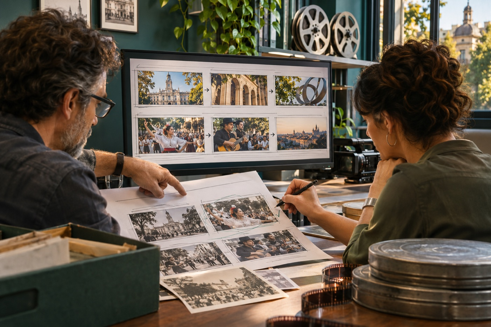

Archive stewardship, creative production, and continuous technical support. Rushes + StoryTown, tailored by the people who build them.
Institutional memory, activated.
Your archive. Your people. Your next story.
Preserve institutional memoryPut existing assets to workExpand your team’s creative scope
TWO CAPABILITIES. ONE DEPARTMENT.
Protect the past. Create what’s next.
Years of footage are an institutional asset. New communication demands are an opportunity. We bring archive management and creative development into one practical service proposal.
RushesARCHIVE STEWARDSHIP
Everything you’ve filmed. Useful again.
Organize, find, and reuse footage on storage your organization controls. Support preservation with verified copies and ongoing archive checks.
Find relevant footage and spoken moments.
Gather material for the editing team.
Make archive care part of everyday work.
Institutional value Protect the investment in what already exists.
StoryTownCREATIVE DEVELOPMENT
Everything you could make. Directed by your team.
Develop ideas, plan scenes, create characters and avatars, and produce voiceovers and new visual material with generative AI under professional creative direction.
Turn a campaign brief into a storyboard before production.
Create characters, avatars, and voiceovers for an approved brief.
Explore generated imagery and scenes to support the story.
Keep editorial judgment with your professionals.
Institutional value Give the existing team more creative possibilities.
FROM THE RUSHES WEBSITE
See the archive. Find the story.
A visual introduction to organizing and finding production material. Your professionals bring the context that turns a collection of files into a useful institutional resource.
These tools strengthen the existing audiovisual department. Your staff select the material, direct the creative work, and approve every final output. The service includes training, ongoing technical support, and regular reviews with your team.
STORYTOWN
One creative workspace. A world of possibilities.
Characters, avatars, voices, images, and video: StoryTown brings generative media into your team’s production process. We continually update the application and integrate new models so your professionals can use advancing technology from one creative workspace.
FROM BRIEF TO VISUAL PROPOSAL
Storyboard your next campaign.
Start with a brief, explore visual directions, and build a storyboard for your next campaign. Develop the sequence of scenes, characters, and voiceover with generative AI while your team shapes the message, refines the creative direction, and approves the proposal before production.
A team behind the tools. Through the whole process.
We build the software, and we understand audiovisual work. You work directly with people who can support your team, adapt the tools, and keep developing them around your department’s needs.
Technical support at every stage.
From assessing your archive and setting up the tools to everyday production, we accompany your team throughout the process. Your audiovisual and technical staff have people to turn to as questions and new needs arise.
Built to evolve with your department.
Because we develop the software ourselves, we can tailor workflows and build specific capabilities for your institution. We define priorities, scope, and delivery together, so development responds to the way your team actually works.
Part of the ecosystem you know.
Rushes works within Adobe Premiere Pro and DaVinci Resolve, connecting archive discovery and footage selection with the editing tools your professionals already use. We help configure that workflow around your existing production environment.
Built by people who understand the medium.
Practical audiovisual experience informs the software, the support, and the improvements we develop with you.

HUMAN-DIRECTED CREATION
Technology opens possibilities. Your team gives them purpose.
From an archival moment to a new visual idea, creative decisions belong to the people who know your institution.
IN PRACTICE
A city’s archive. A new public story.
Illustrative case study · proposed workflow
A communications department needs a short film about the city’s cultural life. Years of interviews, public events, and neighborhood footage already exist across its archive.
The opportunity: turn that institutional memory into a fresh production, with the department’s own people leading the work.
Find the material
Use Rushes to locate relevant footage and interviews, then assemble a selection for the editor.
Develop the story
Use StoryTown to explore a treatment, create a character or avatar to guide the story, develop a voiceover, and generate supporting visuals. The team directs and reviews every element.
Deliver with confidence
The audiovisual team edits the film, checks rights and factual accuracy, and submits it through the institution’s approval process.
An illustrative service workflow, rather than a claim of a completed client project or a built-in integration.
A CLEAR INSTITUTIONAL RETURN
More value from the resources you have.
Continuity
Keep institutional knowledge accessible as projects, priorities, and personnel change.
Less repeated work
Help staff reuse existing footage and spend less effort searching or recreating material.
Creative capacity
Give audiovisual professionals more ways to develop an idea and respond to new briefs.
Accountable adoption
Evaluate practical value, staff experience, and governance before a wider commitment.
A SERVICE BUILT AROUND YOUR DEPARTMENT.
Your department. Your workflows. Our ongoing support.
Begin with a focused demonstration and a service proposal shaped around your department. Bring the decision-maker, the senior audiovisual professional, and the colleagues responsible for IT and information governance.
Agree on success before starting.
Scope
Your archive, production priorities, existing tools, and agreed software adaptations.
Support
Technical support throughout the process, staff orientation, and a shared review.
Evaluation
Time to find footage, reusable material found, production quality, and staff feedback.
Decision
Review results, costs, and suitability before expanding.
Both tools are evolving. Compatibility, access controls, rights, and any external AI processing must be assessed for your institution during scoping. Rushes’ local archive approach does not imply the same processing arrangements for StoryTown.
Your departmental service brief
Use these questions to open a departmental conversation. This preview does not send or collect information.
Which archive collection would be most useful to make accessible?
Which upcoming film or campaign should we support first?
Who will coordinate the service and approve material, rights, and AI use?
What would count as a worthwhile result for the team?